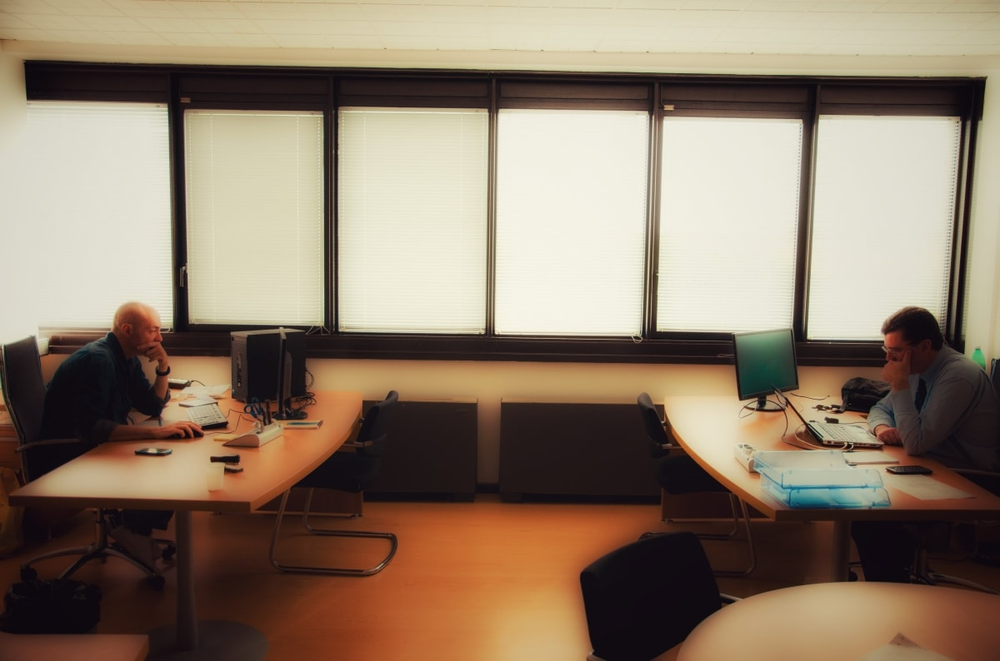

- 
-

L’attività di consulenza applicativa, rivolta allo sviluppo dei sistemi, si estende dalle fasi di raccolta dei requisiti, di definizione funzionale e di organizzazione dei progetti, fino a quelle realizzative di analisi, progettazione e sviluppo. Le modalità di intervento prevedono prestazioni di consulenza presso Clienti, a supporto di gruppi di lavoro, ed anche soluzioni a progetto, talvolta sviluppate “in house”, utilizzando la nostra software-factory.
Digitalia Sistemi, grazie alle preziose esperienze maturate “in prima linea” dai suoi professionisti in ambito enterprise, è in grado di fornire servizi di consulenza tecnologica e di business in numerosi ambiti applicativi. Le nostre esperienze principali spaziano in contesti di business quali il Customer Relationship Management (CRM), il Quality Control Management, il Document Management e l'e-Business. In ambito tecnologico, forniamo supporto all'intero ciclo di sviluppo applicativo che si estende dalle fasi di raccolta dei requisiti utente e di definizione delle architetture, delle tecnologie e dei prodotti, fino a quelle realizzative di analisi, progettazione, sviluppo e testing, avvalendoci delle più avanzate metodologie (p.es.: PRINCE2), dei più diffusi linguaggi di modellazione (p.es.: UML e BPMN), e delle migliori tecnologie in ambito enterprise.
Ci proponiamo come ideatori e realizzatori di progetti “chiavi in mano”, offrendo in taluni casi supporto professionale a gruppi di lavoro coordinati direttamente dal Cliente. Adottiamo le più efficaci metodologie di progettazione e sviluppo (es. ICONIX) e i più produttivi frameworks e strumenti di sviluppo, specialmente in ambito open source.
La nostra azienda fornisce docenti qualificati per formazione specializzata nel settore dell'ICT, del web marketing e delle tecnologie multimediali. Siamo in grado di redarre e proporre specifici progetti didattici su misura delle esigenze dei nostri Clienti e Partners. Inoltre, siamo in grado di erogare attività di training on the job e mentoring, formando le risorse IT dei nostri Clienti, attraverso un'assistenza continua fornita direttamente su progetti "live".
Le nostre aree di eccellenza tecnologica comprendono le piattaforme enterprise Java (JEE/J2EE) sia proprietarie (es. Oracle WebLogic) che open source (es. JBoss) integrando i migliori framework e strumenti di sviluppo disponibili (es. Spring, Hibernate, Adobe Flex, ZK Framework, GWT). Siamo inoltre specializzati in architetture SOA e in piattaforme e tool di integrazione (ESB, ETL). Le nostre soluzioni comprendono applicazioni per dispositivi mobili (Apple iPhone/iPad e Android), Rich Internet Solutions e Sistemi Informativi Geografici (GIS).
Informazioni Personali

Digitalia Sistemi S.r.l. nasce nel 2007 come azienda di consulenza e sviluppo software orientata ai processi. Grazie all'esperienza maturata dai soci fondatori in più di venti anni di attività nel mondo dell'Information Technology, e al pool di specialisti che collaborano con l'azienda, essa è in grado di offrire ai propri Clienti le competenze professionali e tecnologiche per portare a compimento progetti mission-critical ad alto contenuto tecnologico, caratterizzandosi per impegno, affidabilità, know-how e cura del Cliente.